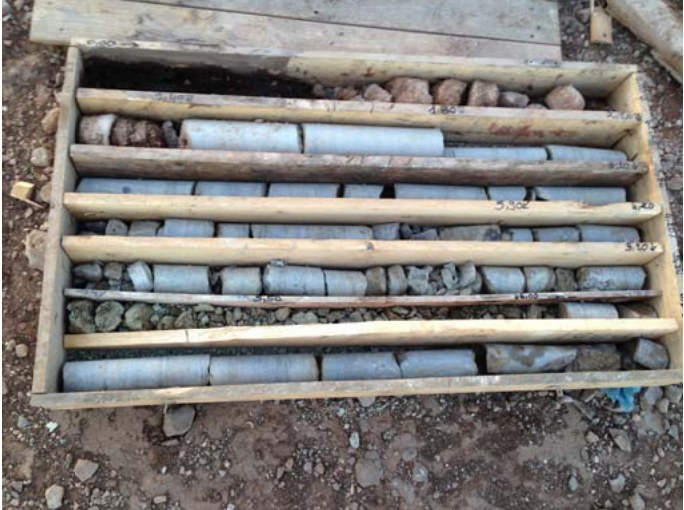
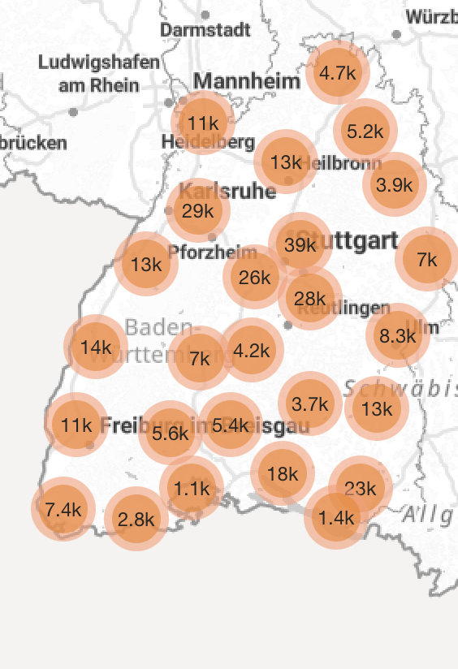
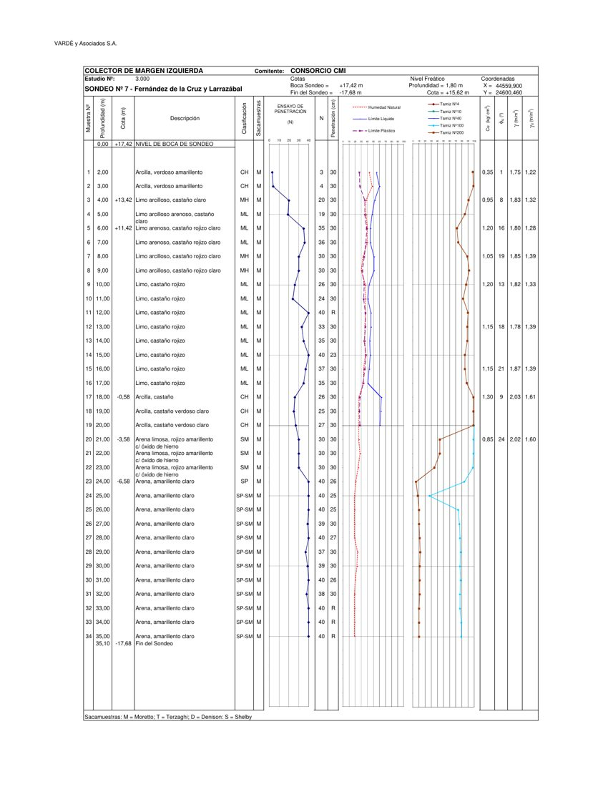
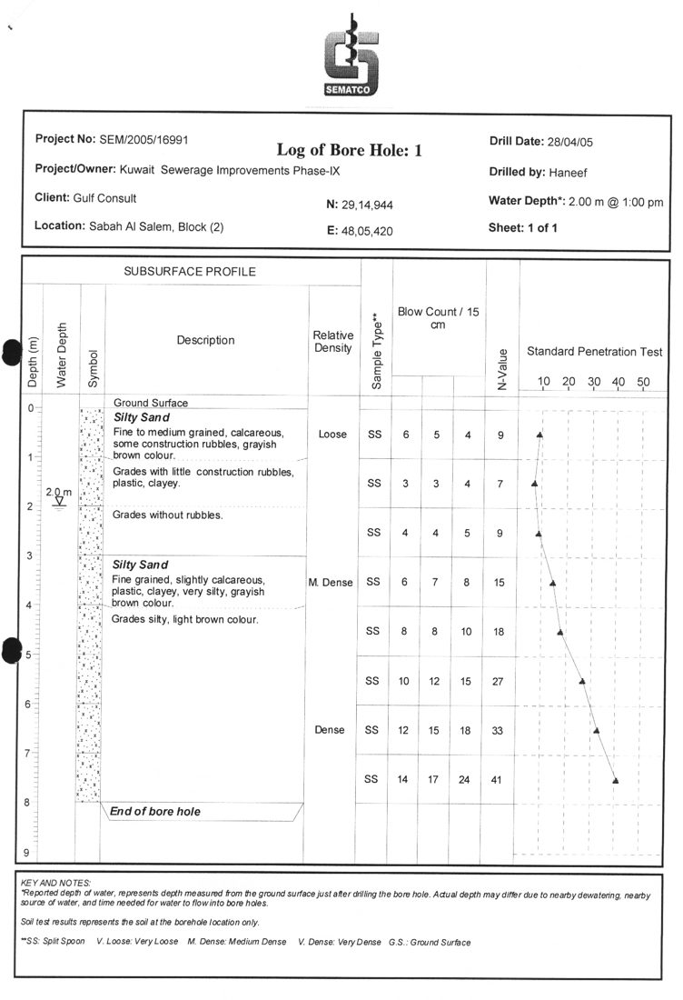
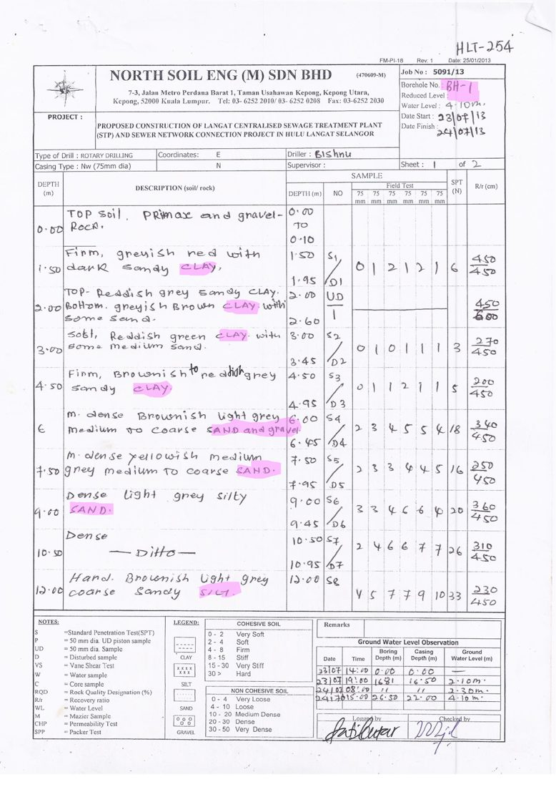

Bormisu
Team Tiramisu · Herrenknecht challenge · BFH 2026
4
lifetimes
herrenknecht.mp4
🤫
Stuttgart 21








Demo
Under the hood
Upload
FastAPI
→
Classify
Mistral Small
→
OCR
Mistral OCR
→
Extract
Mistral Large
→
Check
Python
DIN 4023
DIN 4023
→
Map
PostGIS
Leaflet
Leaflet
Sovereignty
Runs where your data lives.
Cloud · today
Mistral, Paris
- OCRMistral OCR
- Classify & extractMistral Small · Large
Best OCR we found.
On-premise
One GPU, 32 GB
- OCRPaddleOCR-VL
- Classify, extract, chatQwen 3.8 27B
Never leaves the building.
Site office
Mac mini, 32 GB
- OCRPaddleOCR-VL
- Classify, extract, chatQwen 3.8 27B
Fully offline.
Team Tiramisu
Built in Breisgau.
Prada
Design
Tiwen
Design
Vidhu
Backend & data
Felix
Backend & data
Arav
Backend & data
Mateo
Product & pitch
Every borehole. One standard.
Questions?
Questions about Stuttgart 21 go to Deutsche Bahn.